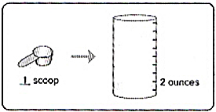
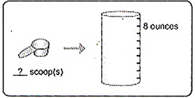
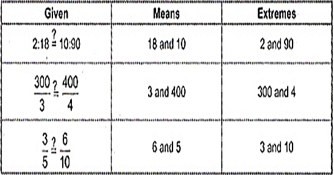

ENGAGE
Mark was asked by his mother to make 8 ounces of milk for his sister Sheila. He is always happy to help his mom. As he was making the milk, he has read from the can that for every 2 ounces of water, you have to put in 1 scoop of milk. His mother appreciated his help and said "Thank you son,I'm glad I can count on you." How many scoops of milk did Mark put in the feeding tabl?
EXPLORE
If you need 1 scoope of milk for every two ounces water, we need to find out how many schoops of milk is needed for 8 ounces of water.
 This problem is asking us to find equivalent ratios.
1 scoop = ___?___
2 ounces 8 ounces
In this example, the denominator at the left is less than the denominator at the right. This means that 4 is a miltiplier, so we have to multiply the remaining term by 4. Since the remaining term is 1, 1 x 4 = 4. The missing term is 4 such that 1/2 =4/8
1/2 and 4/8 are equivalent ratios.
Therefore, Mark needs to put in 4 scoops of milk to 8 ounces of water to make a bottle of milk for his sister Sheila.
EXPLAIN
When two ratios are equivalent, they represent a proportion.
A proportion can be written in two ways, in fraction and colon forms.
1/2 = 4/8 or 1:2 = 4:8
Both are reas as 'one is to two as four is to eight'.
Example Write the following as a proportion, in fraction and colon forms:
1. two boxes contain 18 cookies, 10 boxes contain 60 cookies
2. Mark earned P300.00 for 3 hours of work, while Jusitn earned P400.00 for 4 hours of work.
3. John runs 3 miles every 5 days, 6 miles for 10 days
Solution
| Fraction | Colon |
|---|---|
| 2/18 = 10/60 | 2:18 = 10:60 |
| 300/3 = 400/4 | 300:3 = 400:4 |
| 3/5 = 6/10 | 3:5 = 6:10 |
Identify the means and extremes in the following proportions:
Remember that ratios are equivalent if their simplest forms are equal. Can you check if th egiven ratios are equivalent?
Tell if the given ratios are equivalent or not.
As given set of ratios form a proportion if and only if the ratios containing it are equivalent.
Identify if the given ratios form a proportion or not.
Applications and Problem Solving
Three liters of gasoline can be used to travel at a distance of 48 kilometers. How far can 5 liters go?